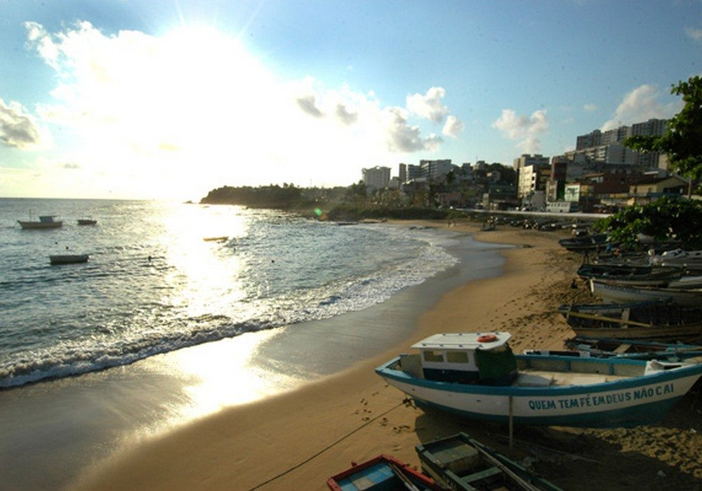

Curiosidade da Cidade
As cores combinam com as fitas que cobrem as grades da Igreja de Nossa Senhora do Rosário dos Pretos, feita pelos escravos. Uma rede de desejos no local onde o antigo pelourinho foi demolido. Em frente à igreja, a imagem de Michael Jackson permanece na sacada onde o cantor gravou o famoso clip com o grupo Olodum. Você ouve a música e pode tirar uma foto com o astro de papel por cinco reais.
A Lavagem do Bonfim é uma festa popular que acontece há quase 250 anos na capital baiana sempre na segunda quinta-feira do mês de janeiro. A fita do Bonfim é quase sinônimo da Igreja do Senhor do Bonfim, um dos cartões postais de Salvador. Quando vier para a terra de todos os santos, encantos e axé, a Igreja é parada obrigatória. Explore vários ângulos da escadaria e aproveite para amarrar sua fitinha e fazer seus três pedidos.
